File: 000210.gt.txt (if the image is defective, simply delete all Arabic text and the line will be excluded)
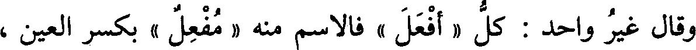
وقال غير واحد : كل « أفعل » فالاسم منه « مفعل » بكسر العين ،
File: 000211.gt.txt (if the image is defective, simply delete all Arabic text and the line will be excluded)
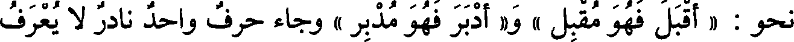
نحو : « أقبل فهو مقبل » و« أدبر فهو مدبر » وجاء حرف واحد نادر لا يعرف
File: 000212.gt.txt (if the image is defective, simply delete all Arabic text and the line will be excluded)
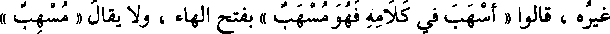
غيره ، قالوا « أسهب في كلامه فهو مسهب » بفتح الهاء ، ولا يقال « مسهب »
File: 000213.gt.txt (if the image is defective, simply delete all Arabic text and the line will be excluded)
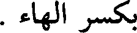
بكسر الهاء .
File: 000214.gt.txt (if the image is defective, simply delete all Arabic text and the line will be excluded)
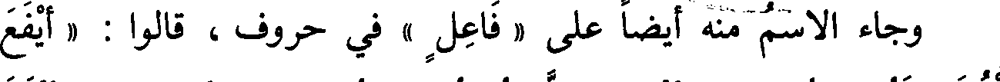
File: 000215.gt.txt (if the image is defective, simply delete all Arabic text and the line will be excluded)
الغلام فهو يافع » ، و« أورس الشجر فهو وارس » : إذا أورق ، و« أبقل
File: 000216.gt.txt (if the image is defective, simply delete all Arabic text and the line will be excluded)
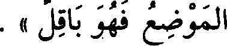
الموضع فهو باقل » .
File: 000217.gt.txt (if the image is defective, simply delete all Arabic text and the line will be excluded)
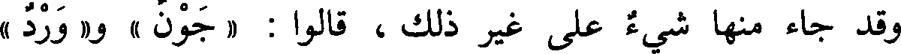
وقد جاء منها شيء على غير ذلك ، قالوا : « جون » و« ورد »
File: 000218.gt.txt (if the image is defective, simply delete all Arabic text and the line will be excluded)
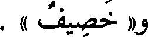
و« خصيف » .
File: 000219.gt.txt (if the image is defective, simply delete all Arabic text and the line will be excluded)
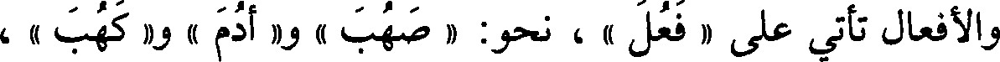
والأفعال تأتي على « فعل » ، نحو: « صهب » و« أدم » و« كهب » ،
File: 000220.gt.txt (if the image is defective, simply delete all Arabic text and the line will be excluded)
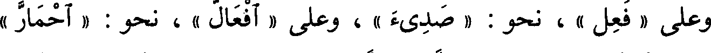
وعلى « فعل » ، نحو : « صديء » ، وعلى « افعال » ، نحو: « احمار »
File: 000221.gt.txt (if the image is defective, simply delete all Arabic text and the line will be excluded)
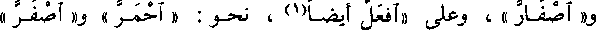
و« اصفار » ، وعلى «افعل أيضا(1) ، نحو : « احمر » و« اصفر »
File: 000222.gt.txt (if the image is defective, simply delete all Arabic text and the line will be excluded)
باب الصفات(2) بالعيوب والأدواء
File: 000223.gt.txt (if the image is defective, simply delete all Arabic text and the line will be excluded)
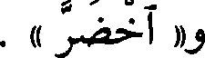
و« اخضر » .
File: 000224.gt.txt (if the image is defective, simply delete all Arabic text and the line will be excluded)
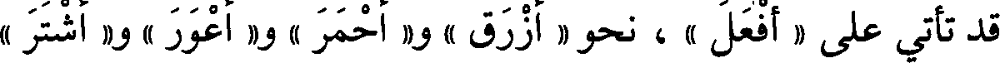
قد تأتي على « أفعل » ، نحو « أزرق » و«أحمر » و« أعور » و« أشتر »
File: 000225.gt.txt (if the image is defective, simply delete all Arabic text and the line will be excluded)
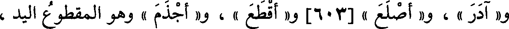
و« آدر » ، و« أصلع » [603] و« أقطع » ، و« أجذم » وهو المقطوع اليد ،
File: 000226.gt.txt (if the image is defective, simply delete all Arabic text and the line will be excluded)
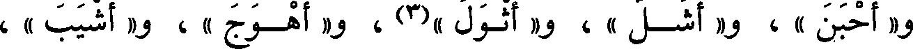
و« أحبن »، و« أشل » ، و« أثول »(3) ، و« أهوج » ، و« أشيب » ،
File: 000227.gt.txt (if the image is defective, simply delete all Arabic text and the line will be excluded)
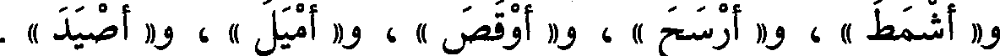
و« أشمط » ، و« أرسح » ، و« أوقص » ، و« أميل » ، و« أصيد » .
File: 000228.gt.txt (if the image is defective, simply delete all Arabic text and the line will be excluded)
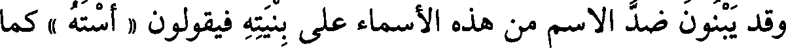
وقد يبنون ضد الاسم من هذه الأسماء على بنيته فيقولون « أسته » كما
File: 000229.gt.txt (if the image is defective, simply delete all Arabic text and the line will be excluded)
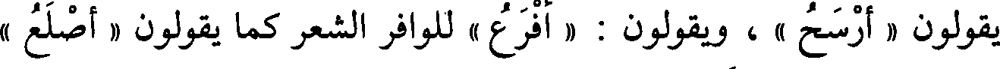
يقولون « أرسح » ، ويقولون : « أفرع » للوافر الشعر كما يقولون « أصلع »
File: 000230.gt.txt (if the image is defective, simply delete all Arabic text and the line will be excluded)
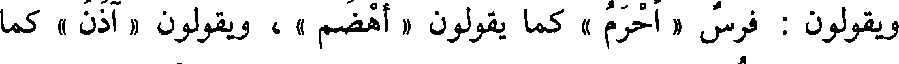
ويقولون : فرس « أحرم » كما يقولون « أهضم » ، ويقولون « آذن » كما
File: 000231.gt.txt (if the image is defective, simply delete all Arabic text and the line will be excluded)
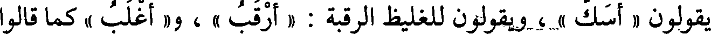
يقولون « أسك » ، ويقولون للغليظ الرقبة : « أرقب » ، و« أغلب » كما قالوا
File: 000232.gt.txt (if the image is defective, simply delete all Arabic text and the line will be excluded)
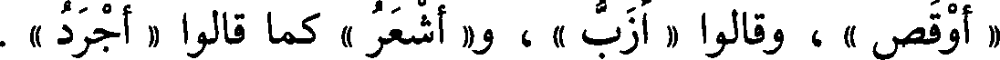
« أوقص » ، وقالوا « أزب » ، و« أشعر » كما قالوا « أجرد » .
File: 000233.gt.txt (if the image is defective, simply delete all Arabic text and the line will be excluded)
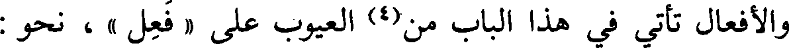
والأفعال تأتي في هذاالباب من(4) العيوب على « فعل » ، نحو :
File: 000234.gt.txt (if the image is defective, simply delete all Arabic text and the line will be excluded)
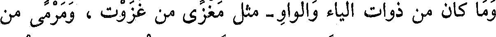
وما كان من ذوات الياء والواو- مثل مغزى من غزوت ، ومرمى من
File: 000235.gt.txt (if the image is defective, simply delete all Arabic text and the line will be excluded)
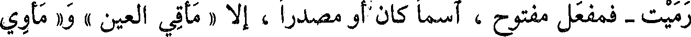
رميت - فمفعل مفتوح ، اسما كان أو مصدرا ، إلا « مأقي العين » و« مأوي
File: 000236.gt.txt (if the image is defective, simply delete all Arabic text and the line will be excluded)
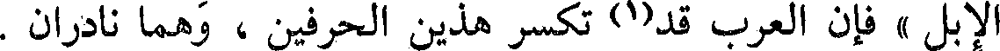
الإبل » فإن العرب قد(1) تكسر هذين الحرفين ، وهما نادران .
File: 000237.gt.txt (if the image is defective, simply delete all Arabic text and the line will be excluded)
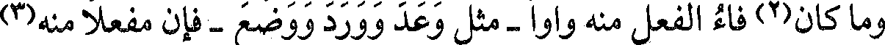
وما كان(2) فاءالفعل منه واوا-مثل وعدووردووضع-فإن مفعلا منه(3)
File: 000238.gt.txt (if the image is defective, simply delete all Arabic text and the line will be excluded)
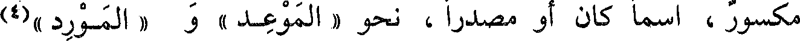
مكسور ،اسما كان أو مصدرا ، نحو « الموعد » و «المورد »(4)
File: 000239.gt.txt (if the image is defective, simply delete all Arabic text and the line will be excluded)
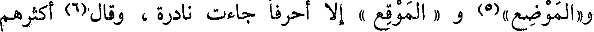
و« الموضع »(5) و « الموقع » إلا أحرفا جاءت نادرة ، وقال(6) أكثرهم
To Save: `Ctrl+s`, make sure to choose `Webpage, complete`!